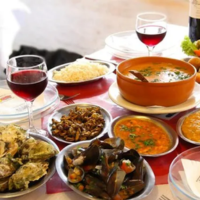

Entretenimento:
Para aqueles que curtem uma boa vida noturna, saiba que na Região Norte está Jurerê Internacional, bairro que reúne bares e casas noturnas para todos os tipos de gostos, além da praia mais famosa da cidade. Já para quem prefere passeios mais diferenciados, a comunidade de Santo Antônio de Lisboa e os fortes construídos pelos portugueses no século XVIII são ótimas alternativas para os visitantes — realizar um passeio de escuna e explorar os mistérios das fortalezas pode ser um programa bem interessante. Saiba mais clicando aqui!
A Região Central também tem suas belezas e conta com uma das principais avenidas de Florianópolis, a
Beira Mar Norte, conhecida na região como a mais bonita da cidade. A via é utilizada como espaço de
lazer, diversão e contemplação pelos moradores e turistas. Apesar da diversidade do comércio e da
popularidade da avenida, o território central abriga alguns dos principais atrativos históricos da
ilha, como o Mercado Público, a Catedral Metropolitana, o Palácio Cruz e Souza e, claro, a famosa
Ponte Hercílio Luz, um dos maiores cartões-postais da cidade. Saiba mais clicando aqui!

A gastronomia local é típica de cidades à beira da praia: o prato principal sempre envolve frutos do
mar. Mas não é só deste tipo de gastronomia que a cidade vive, contando com forte influência da
colonização portuguesa. Sendo assim, se você pretende viajar para Florianópolis, vale muito a pena
conhecer e experimentar alguns pratos típicos. Saiba mais clicando aqui!